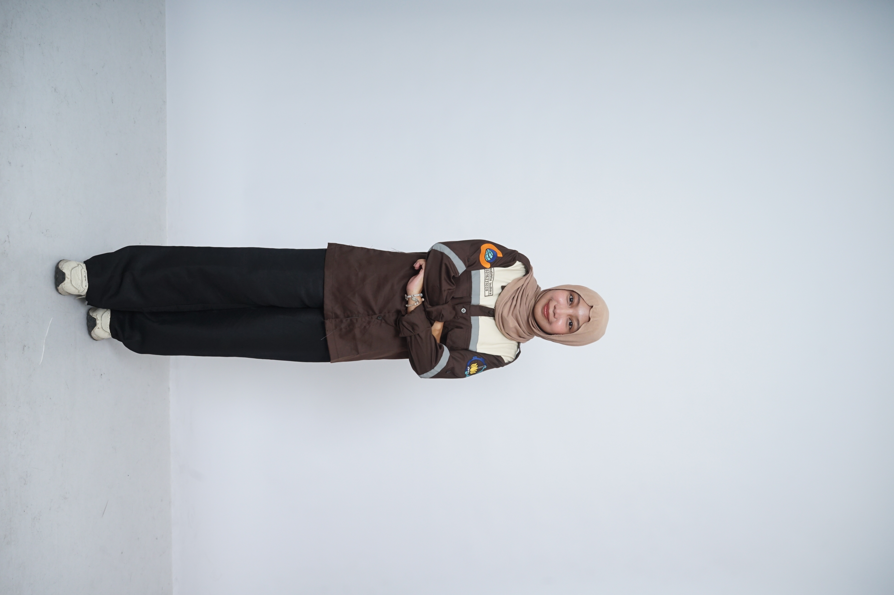
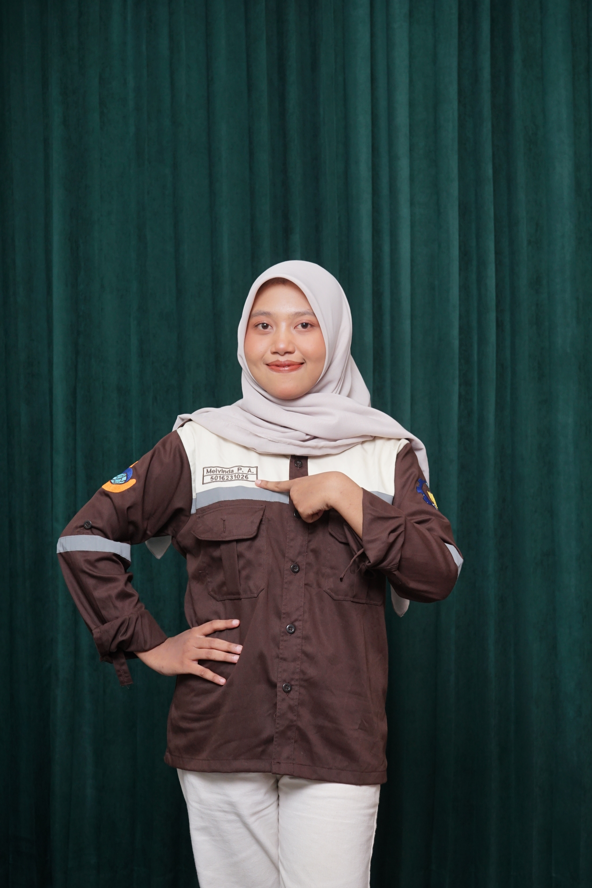
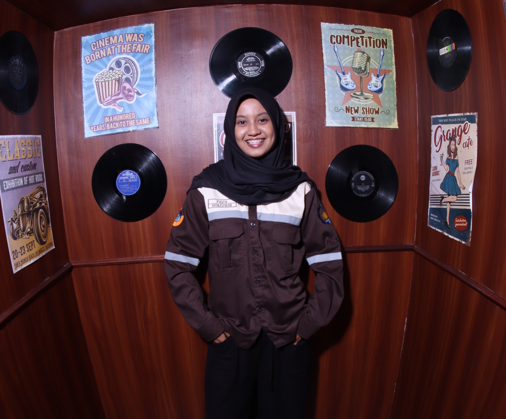
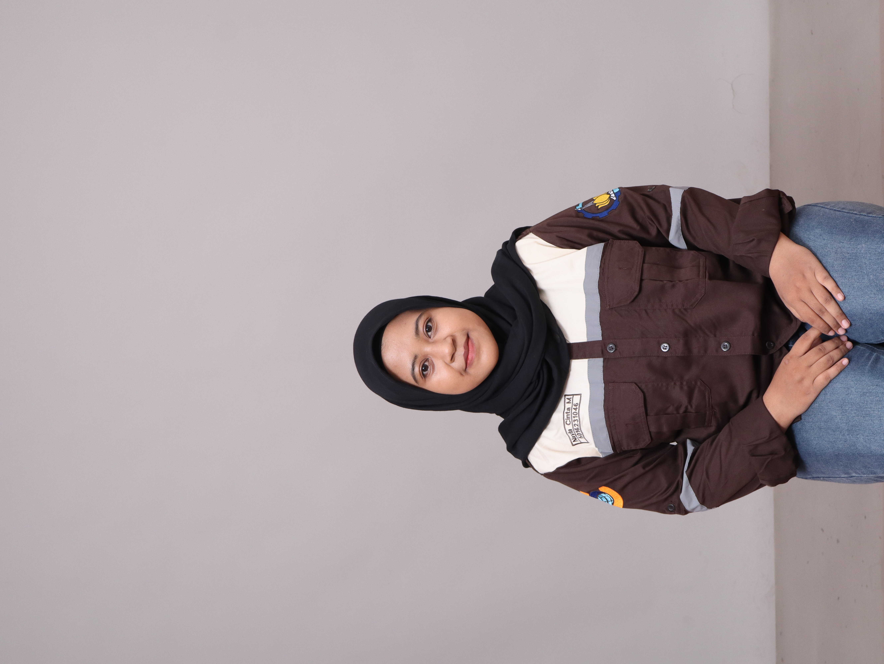
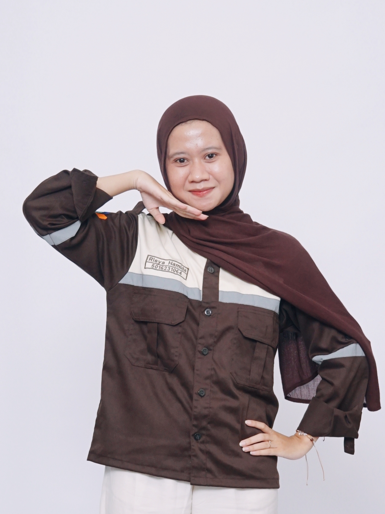

Visualisasi Interaktif Valuasi Massal Nilai Tanah
Dept. Teknik Geomatika ITS · Penilaian Tanah & Properti (A) · Kelompok 7 · 2026
Kelompok 7
2026
Kelompok 7 · Institut Teknologi Sepuluh Nopember · 2026
Pengembangan WebGIS Interaktif dan Dashboard Analitik berbasis Model Nilai Tanah menggunakan GIS & AHP — Kecamatan Gondokusuman, Kota Yogyakarta.
Klik peta untuk detail zona · Buka WebGIS lengkap →
Nilai tanah adalah cerminan kompleks dari aksesibilitas, fasilitas, dan dinamika kota. Tanpa model yang sistematis, penetapan NJOP seringkali tidak mencerminkan harga pasar riil — menciptakan gap yang merugikan baik pemerintah maupun masyarakat.
Mengembangkan sistem visualisasi data interaktif dari model nilai tanah yang dibangun pada ETS, sehingga hasil penilaian dapat dikomunikasikan secara transparan, informatif, dan dapat diakses publik.




